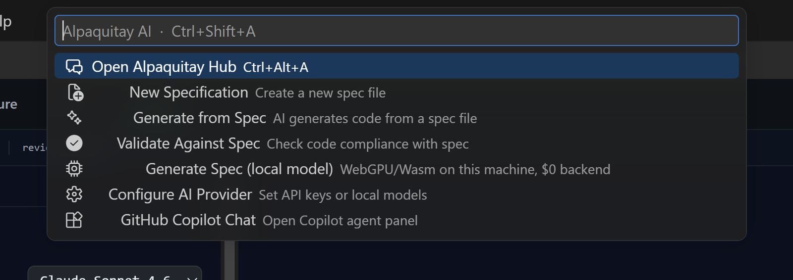

Capítulo 01
Instalación y primeros pasos
En cinco minutos tendrás la extensión instalada, un proveedor de IA conectado y el Hub abierto sobre tu proyecto.
Requisitos
| Necesitas | Detalle |
|---|---|
| Visual Studio Code | 1.85 o posterior (Windows, macOS o Linux). También funciona en editores compatibles que instalan desde Open VSX, como VSCodium. |
| Una carpeta abierta | El arnés trabaja sobre la carpeta del workspace: la analiza, escribe allí spec.md y guarda sus evidencias en .alpaquitay/. |
| Git (recomendado) | Las métricas DORA, el historial trazable y los checkpoints antes de escribir usan Git. Sin Git la extensión funciona, pero sin esas tres cosas. |
| Un proveedor de IA | Local (Ollama, LM Studio, motor local) o en la nube (Anthropic, OpenAI). Lo eliges en el capítulo 2. |
Instalar
Desde el Marketplace de VS Code (recomendado). Abre el panel de extensiones (Ctrl+Shift+X), busca Alpaquitay AI y pulsa Install. O desde una terminal:
code --install-extension alpaquitay-ai.alpaquitay-ai
Desde Open VSX (VSCodium y otros editores):
ovsx install alpaquitay-ai.alpaquitay-ai
La extensión se activa sola cuando VS Code termina de arrancar. No pide cuenta ni registro, y la telemetría viene desactivada.
Los dos atajos que necesitas
| Atajo (Windows/Linux) | macOS | Qué abre |
|---|---|---|
| Ctrl+Alt+A | Cmd+Alt+A | El Hub: el panel principal con todas las pestañas. |
| Ctrl+Shift+A | Cmd+Shift+A | El menú rápido: abrir el Hub, nueva especificación, generar desde una especificación, validarla, generar una especificación con el modelo local, configurar el proveedor o abrir GitHub Copilot Chat. |


Todos los comandos están también en la paleta de comandos (F1) con el prefijo Alpaquitay AI:.
El Hub, de un vistazo
El Hub es una única pestaña del editor con seis secciones. Arriba a la derecha eliges el modelo activo y abres la configuración (⚙).

| Pestaña | Para qué sirve | Capítulo |
|---|---|---|
| Work | Especificación (spec.md), tablero Kanban y chat con el arnés. |
Work |
| Docs | Editar y analizar documentos Word, Markdown, EPUB y PDF con un agente. | Docs |
| Evidence | Señales del repositorio, deuda agéntica, cola de revisión, historial trazable, rutas y privacidad. | Evidence |
| Architecture | Lienzo de arquitectura inferido del proyecto, ADR, evaluación con IA y exportación a IaC. | Arquitectura |
| Agents | Skills incluidas y las tuyas propias. | Agentes |
| Settings | Proveedor, modelo, límites, system prompt, herramientas y archivo de especificación. | Proveedores, Referencia |
Bajo las pestañas, la franja del arnés resume el estado: carpeta de trabajo, stack detectado, deuda (0/100), diffs pendientes de revisión y modo de privacidad.
Tu primera sesión, paso a paso
- Abre una carpeta de proyecto en VS Code (File → Open Folder). Puede ser un proyecto nuevo o uno heredado.
- Conecta un proveedor. Lo más rápido y privado es Ollama: instálalo y ejecuta
ollama pull qwen2.5-coder(o cualquier modelo). Alpaquitay lo detecta solo enhttp://localhost:11434. Más opciones en el capítulo 2. - Abre el Hub con Ctrl+Alt+A.
- Escribe
onboarden el chat de la pestaña Work. Es gratis (no llama a ningún modelo): analiza el proyecto, detecta los comandos de build y test, escribe un primer ADR y calcula las señales DORA. Ver Comandos del chat. - Crea tu especificación con + Create with AI en el panel Spec, o con el comando Generate Specification (Local Model) si quieres que no salga nada de tu equipo.
- Arrastra una tarea a In Progress y revisa el diff que propone. Escribe
si aplicarpara escribirlo onopara descartarlo.
Qué se crea en tu proyecto
Alpaquitay escribe solo dentro de tu carpeta de trabajo, y casi todo dentro de .alpaquitay/:
| Archivo | Contenido |
|---|---|
spec.md |
Tu especificación: épicas y tareas. Es la fuente de verdad del tablero. |
.alpaquitay/decisions.jsonl |
Una línea por decisión del arnés: ruta, carril, confianza y motivos. |
.alpaquitay/debt.json |
El medidor de deuda agéntica y sus últimos eventos. |
.alpaquitay/economy.json |
Llamadas a modelos frente a operaciones locales gratuitas. |
.alpaquitay/fingerprint.json, platform.json |
El stack detectado y los comandos de build y test. |
.alpaquitay/ADR-001-onboard.md, .alpaquitay/adrs/ |
Registros de decisiones de arquitectura. |
.alpaquitay/memory.json |
Memoria jerárquica del proyecto (clases, funciones, tareas completadas). |
.alpaquitay/ideas.json |
La bandeja de ideas que aún no son tareas. |
Decide tú si versionar .alpaquitay/ en Git: compartirla da al equipo el mismo historial de decisiones; ignorarla la mantiene personal.
Desinstalar
Desinstala desde el panel de extensiones. La carpeta .alpaquitay/ y spec.md se quedan en tu proyecto (son tuyos); bórralos a mano si no los quieres. Si usaste el motor local, ejecuta antes Alpaquitay AI: Clear Local Model Cache para liberar el espacio del modelo descargado.